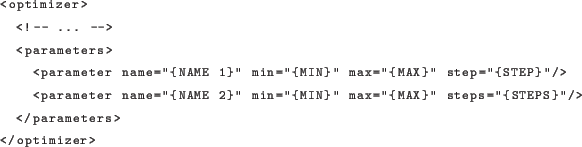

Next: optirooter Up: Optimization Algorithms Previous: GA Contents
This optimizer extends the job XML description so that you can specify the range for each parameter to explore systematically instead of just the upper and lower boundary as done normally. An example description:

You can specify ranges in two different ways, either by specifying the step size explicitly (first parameter in the example) or by specifying the number of steps that should be explored (second parameter in the example). In the second case the step size will be automatically calculated.
There are no additional settings for the systematic search. The default
population-size setting determines the batch size in which
solutions are sent to the optimaster. You should set this to a
sensible value (around 200/300 or something).